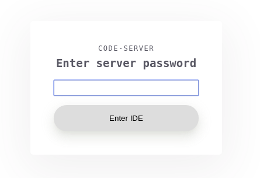
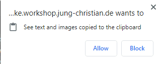

Visual Studio Code - Introduction
To make it easier for you to perform the tasks described in this workshop, we provide an Visual Studio Code Server for you. This web based IDE allows you to write and edit your Ansible Playbooks and execute command with the built-in Terminal. This part of the Workshop documentation will give you a very quick introduction.
Tested platforms
There are probably thousands of combinations of Operating Systems and Web Browsers, and we couldn’t test them all. We noticed it works best with Google Chrome (or Chromium) on Linux, Windows or Mac. We ran into issues with Copy & Paste with Firefox and Edge on Windows 10. There might be other issues with other combinations, which is why we recommend to use Chrome/Chromium if you run into problems.
How to login
Each students has it’s dedicated lab environment. This also means you have your dedicated instance of Visual Studio Code Server. The URL to open the Web Interface is:
https://student<N>-code.<LABID>.open.redhat.comReplace <N> with your student number and <LABID>. You will find your LABID in the invite to this event. If you don’t know your LABID, ask your instructor.
After opening the URL, you will see a dialog asking for your password. The password was provided to you in the Lab instructions or the invite to this event.

If the password was entered correctly, you will see a web page like this:

UI Basics
On the very left you will see a column of Icons to switch the UI into different modes. During this workshop you will only need the Explorer mode indicated by the two paper icon.
On the upper right you should see a large window with a VS Code Welcome message. When you will start working with files, this will show the file you are working on.
Finally in the lower right you can enable a Terminal session. If you can’t see the terminal view, click on Terminal and New Terminal in the menu navigation on the top.
As usual, you have a menu bar on the top and you can resize the three parts of the UI by moving the dividers.
How to use the Terminal
You can execute commands on the Linux command line by using the terminal mode. It’s usually shown on the lower right part of the UI. If you can’t see the terminal view, click on Terminal and New Terminal in the menu navigation on the top.
The terminal is running on your “control node” or “ansible” node - this is how we call this instance in the Workshop Guide.
It’s a fully functional terminal with all the features you would expect from Linux. So, yes, you can break and destroy your instance if you try hard enough.
We noticed issues with Copy & Paste. On Linux the best way to paste text is to click the middle mouse button. On Windows 10 in our testing it only worked with Chrome and not with Firefox nor Edge.
How to create and edit files
There are several tasks in the workshop where you will be asked to create and edit files. You can create new files easily by clicking on File, New File. You can also save your files. Pay attention to the lab instructions since you are working in different directories during your lab exercises.
By clicking on the Explorer Mode icon (the two paper sheets in the button column on the far left) you can enable and disable a folder tree, which might help you to navigate between different files and folders.
Gotchas
Runs best on Chrome
Visual Studio Code Server should work well with all modern browsers like Firefox or Chrome. Due to limited resources we did not test all possible combinations. If you run into issues we recommend to use Google Chrome or Chromium.
If you don’t have Chrome installed, it is available here.
Copy & Paste and general performance
Please also keep in mind that the lab is running in the cloud. Sometimes performance is degraded due to high latency. This became particularly challenging when you try to copy & paste something into the editor window. After pressing Ctrl-V to paste, give a few seconds to respond.

In Chrome, you might have to allow paste from clipboard, when you use it the first time.